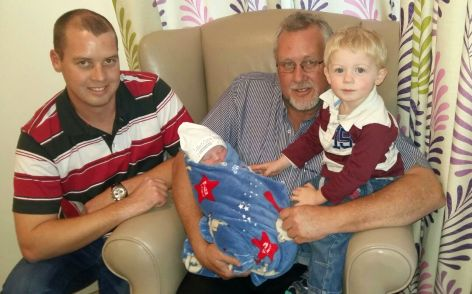

|
b7.c8.d5.e4.f1.g2. Adriaan Louwrens Albertus Henning *14-11-1958 en sy vrou , Yvonne Sylvia (gebore Paul) *26-8-1960
Beskou lys van mense op foto
|
 |
b7.c8.d5.e4.f1.g2. Adriaan Louwrens Albertus Henning *14-11-1958, sy seun, Werner Louwrens *1-5-1985 en twee kleinseuns, Louwrens *28-1-2013 en Liam *6-7-2015
Beskou lys van mense op foto